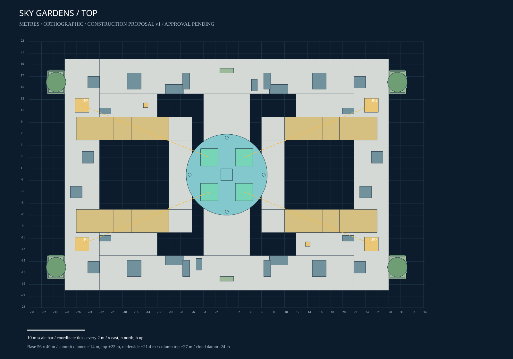

Design proposal, not production-ready art or validated gameplay. Scene.json is the geometric authority. Foliage and waterfalls are placement envelopes. Summit dimensions require approval.
Full manifest / Placements / Blender construction master
